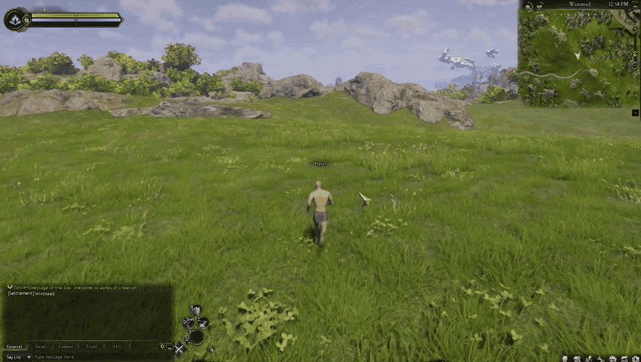
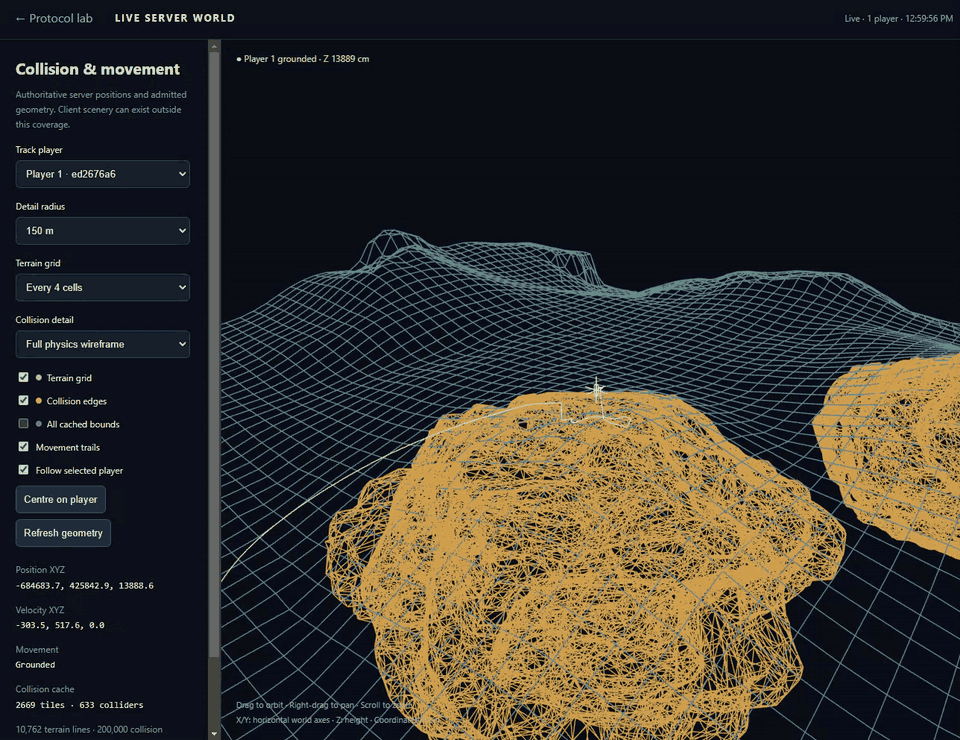

Ashes Server Lab
Experimental Ashes of Creation private server / server emulator
Ashes Server Lab is an experimental open-source C++20 server-emulation project for Ashes of Creation, supporting local Verra exploration, terrain collision, movement, flight and live browser tools.
It is an independent interoperability and reverse-engineering lab built around one exact Windows client. The initial prototype was AI-generated and then iteratively debugged. It remains very buggy and incomplete.
Get started · FAQ · GitHub repository · Contribute
What currently works
- A local launcher tether, lobby, world handshake and one local account.
- Character initialization, possession, HUD and movement animation observed in the supported client.
- Basic movement and jumping, configurable speed, collision/gravity toggles and flight altitude controls.
- Offline extraction from your own archives: 2,669 Verra heightfields, including 82 rotated components, and one warped landscape collision mesh.
- A browser dashboard, live 3D terrain view, player trails, packet/event inspection and SQLite logs.
These are measured capabilities of an exploration sandbox. Read verification notes for the distinction between source-only tests, packaged setup checks and the recorded client session.
What does not work yet
Combat, NPCs, quests, inventory, abilities and progression are not implemented. Production multiplayer is not validated; current evidence is one locally connected player. Services bind to loopback.
Walking correction pushback/jitter persists. The period-key walk toggle can stop movement handling, sprint needs investigation, and initialization may fail or time out. Complete building, rock, foliage, water and dynamic-object collision is not implemented. The default cache contains landscape terrain only.
See the local lab
Load the exploration demonstration (approximately 9 MB)

Load the live browser demonstration (approximately 9 MB)

The recordings show the real client and local tools, including an older incomplete prop cache. The packaged default has terrain-only collision. Media notes and full recordings explain the scope. Game-rendered imagery belongs to its respective owners.
Supported client and requirements
The repository records verification on 2026-10-07 against Steam Build ID 21564631, AOC-CL-438018, Steam App ID 4124950, Unreal Engine 5.6.0-438018. Setup and launch enforce the executable SHA-256; a newer build is not automatically compatible.
Supply your own matching Windows x64 client, Visual Studio 2022 C++ tools, MSYS2 dependency DLLs, Python 3.10+ with NumPy, .NET 10 SDK and a compatible Oodle library you are entitled to use. Initial setup downloads dependencies. Getting started includes the exact hash, build commands, terrain generation and EOS restoration steps.
Bring your own client. The repository does not distribute the game/client, proprietary game assets, extracted terrain, an Unreal SDK dump, Epic's EOS SDK or Oodle. Original lab code is MIT licensed; dependencies and game content retain their own licenses and ownership.
Documentation and development
- FAQ: local/offline exploration, compatibility, multiplayer and project scope.
- Getting started and README: build, client preparation, terrain extraction and troubleshooting.
- Architecture: C++ runtime, local services, protocol stages and controls.
- Terrain collision: coverage, formats, admission and limitations.
- Roadmap: prioritized research, with no promised delivery dates.
- Verification: evidence, test results and their limits.
- Contributing: reproducible fixes and safe contribution contents.
- Third-party notices: licensing and dependencies.
Independent and unofficial
Ashes Server Lab is not affiliated with, supported by, or endorsed by Intrepid Studios. It is not an official server or a complete recreation of Ashes of Creation. View the source and report issues on GitHub.